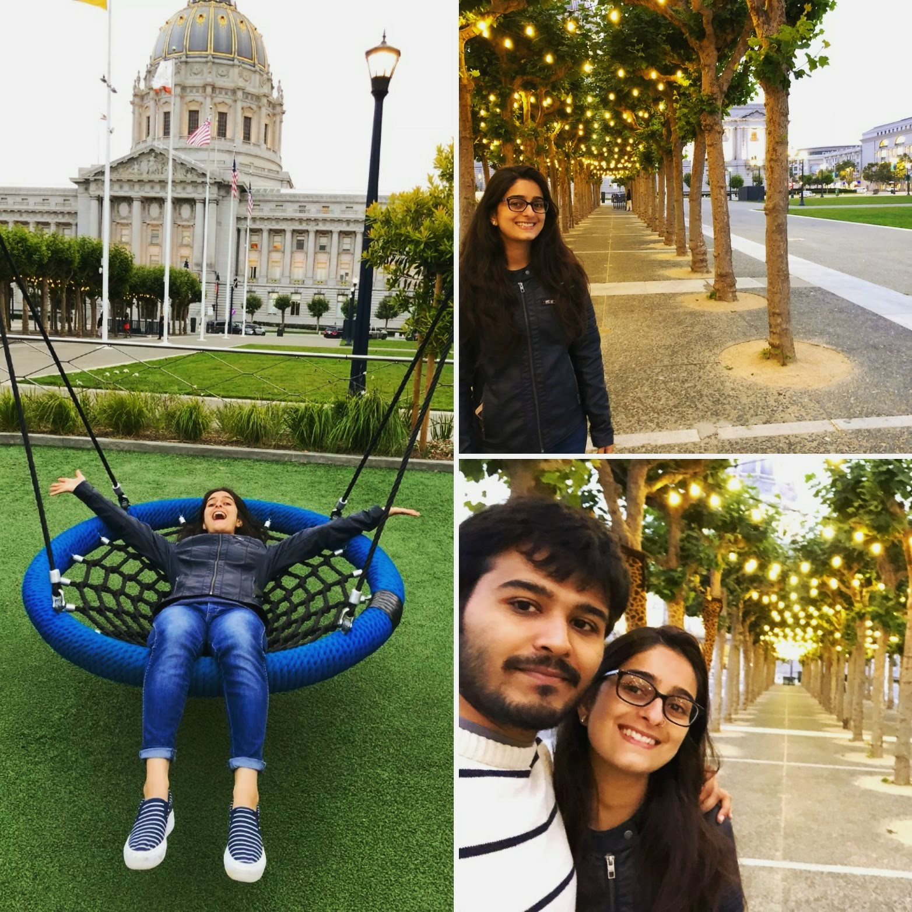
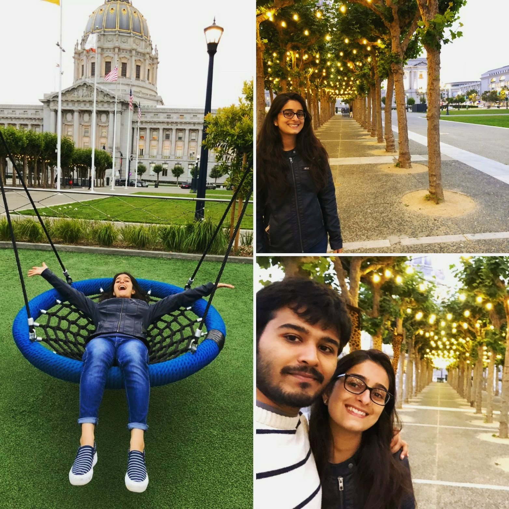
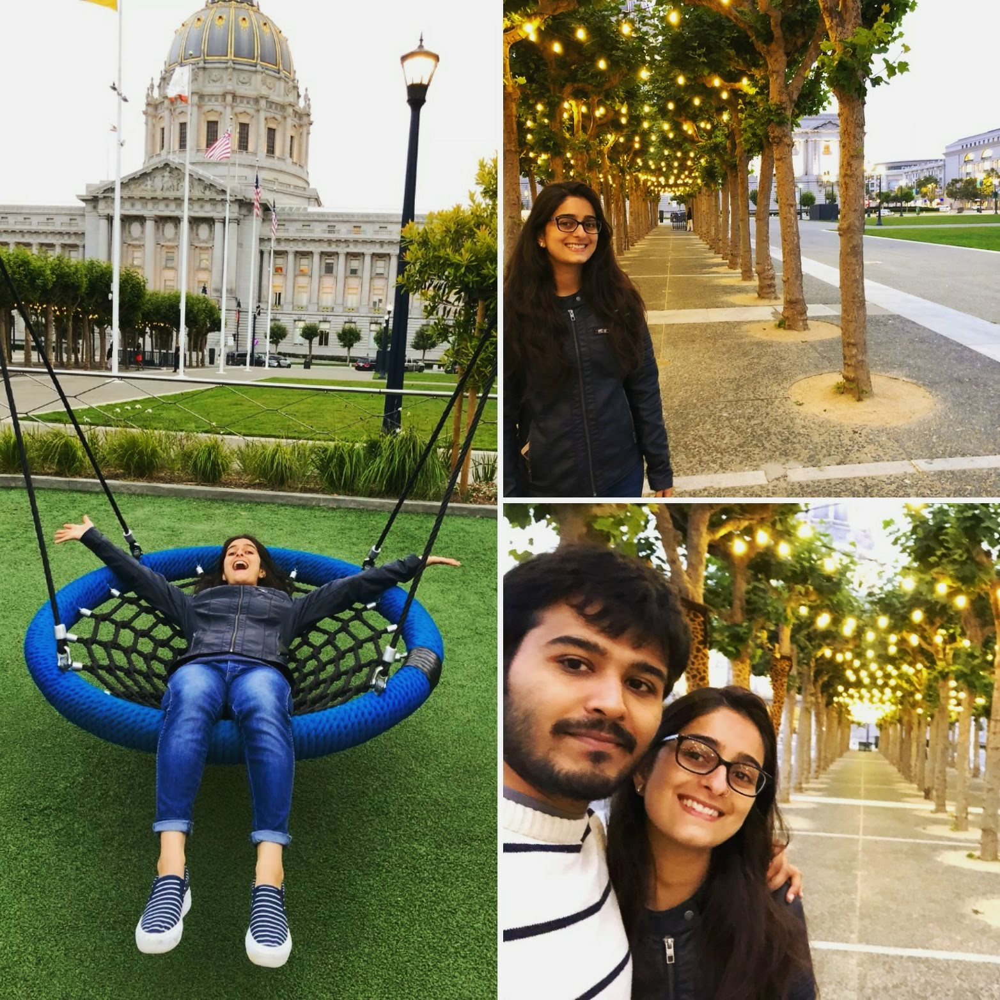

Civic Center is distinguished by its many beaux arts-style government buildings and performing arts venues. City Hall, a sprawling 1915 landmark with a gold-leafed dome, anchors a complex that includes the elegant War Memorial Opera House, the Asian Art Museum and a large plaza. Entertainment seekers choose from plays at historic theaters, and concerts at sleek spots such as Davis Symphony Hall and the SFJazz Center.
